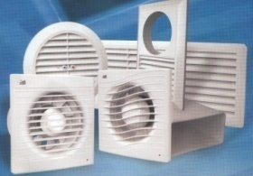

<!DOCTYPE html PUBLIC "-//W3C//DTD XHTML 1.0 Strict//EN" "http://www.w3.org/TR/xhtml1/DTD/xhtml1-strict.dtd">

<!doctype html>
<html>
<head>
	<title>Ventiliatoriai - buitiniai ir pramoniniai | Ventiliatoriai</title>
	<meta charset="utf-8">
<meta name="description" content="Ventiliatoriai - buitiniai ir pramoniniai" />
<meta name="keywords" content="Ventiliatoriai - buitiniai ir pramoniniai" />
	<meta name="author" content="codetomake.com">
	<link type="text/css" rel="stylesheet" href="css/style.css">
	<link rel="stylesheet" href="css/font-awesome-4.7.0/css/font-awesome.min.css">
	
	
</head>
<body  id="JgvYAHeI">
<header class="header"  id="QB41zsNbEHT426">
<div class="top"  id="HsAt4oFFvLZgdhu">

<div class="social">
	<a href="#"><i class="fa fa-facebook-square fa-2x" aria-hidden="true" id="wYaH1CWrqj"></i></a>
	<a href="#"><i class="fa fa-twitter-square fa-2x" aria-hidden="true" id="ARKIm6Fe"></i></a>
	<a href="#"><i class="fa fa-pinterest-square fa-2x" aria-hidden="true" id="qWEqaH1b"></i></a>
	<a href="#"><i class="fa fa-google-plus-square fa-2x" aria-hidden="true" id="UaN3gCUNXg"></i></a>
	<a href="#"><i class="fa fa-linkedin-square fa-2x" aria-hidden="true" id="OE5UY2X"></i></a>
</div>

<div class="search"  id="qCVENXhZW4A5">
<form method="post"  id="uIvsnlQ">
<input type="text" name="keyword" placeholder="Search...">
<input type="submit" value="search">
</form>
</div>

</div>
<div class="head" id="Ba7YE6AfbJ">
<a href="#" class="logo" alt="codetomake.com" title="codetomake.com">
<em>Codetomake.com</em>
</a>


</div>
<nav id="O1z3tyTUm">
	<ul>
		<li id="WSUU7PXR"><a href="index.html" class="active">Home</a></li>
		<li id="goCdhTdfkjkIcJr"><a href="#">Portfolio</a></li>
		<li id="AgmasEFn5MGyv"><a href="#">Articles</a></li>
		<li id="6IJTl3I"><a href="terms.html">Terms and Conditions</a></li>
		<li id="ehuN3jFkNQLIHno"><a href="photo.html">Photo gallery</a></li>
		<li id="5lN7PK5"><a href="contact.html">Contacts</a></li>
		<li id="GgJmpFTOIFEeoW"><a href="privacy-policy.html">Privacy policy</a></li>
	</ul>
</nav>
</header>

<section class="slider">
<div class="inner" id="fNhkfWRy">

</div>
</section>

<div class="main" id="HVuAuXj4pSJOyvV">
<section class="col-main">
<h1 id="WqVIHDTMMhKUKF">Ventiliatoriai - buitiniai ir pramoniniai</h1> 2020.10.29 10:48

<p>

				<center></center><br><br><i> </i> <h3> Prisijungti arba registruokitės </h3> <i> </i> <h3> Slaptažodžio priminimas</h3> <i> </i> <h3> Informacija apie naudojamus slapukus</h3> Slapukų naudojimo politika + <br/> <br/> <p> Kad &scaron;i svetainė tinkamai veiktų, kartais į jūsų įrenginį ji įra&scaron;o mažas duomenų rinkmenas, vadinamuosius slapukus. Tą patį daro ir dauguma didžiųjų interneto svetainių.</p> <p> <strong> Kas yra slapukai?</strong> <br/> Slapukas yra nedidelė teksto rinkmena, kurią svetainė jums joje apsilankius i&scaron;saugo jūsų kompiuteryje arba judriojo ry&scaron;io įrenginyje. Dėl jo interneto svetainė gali tam tikrą laiką &bdquo;atsiminti&ldquo; jūsų veiksmus ir parinktis (pvz., registracijos vardą, kalbą ir kitas rodymo parinktis), o jums nereikia jų i&scaron; naujo įvedinėti kaskart lankantis svetainėje ar nar&scaron;ant įvairiuose jos puslapiuose.</p> <p> <strong> Kaip naudojame slapukus?</strong> <br/> Kai kurie mūsų puslapiai naudoja slapukus, kad atsimintų:</p> jūsų rodymo pasirinktis, pavyzdžiui prekių filtrus; ar jau pamatėte akcijinės prekės i&scaron;&scaron;okantį langą (tam, kad Jums nebūtų rodoma dar kartą); ar sutikote, kad naudotume slapukus &scaron;ioje svetainėje. <p> Be to, Jums nar&scaron;ant puslapyje, gali būti naudojami slapukai, kad būtų galima anonimi&scaron;kai gauti statistinių duomenų apie tai, kaip radote tą puslapį ir kokių prekių ie&scaron;kojote.</p> <p> Kad interneto svetainė galėtų teisingai veikti, nebūtina leisti naudoti visus &scaron;iuos slapukus, bet tai padarius nar&scaron;yti jums bus paprasčiau. Galite i&scaron;trinti arba blokuoti slapukus, bet tokiu atveju kai kurios &scaron;ios svetainės funkcijos gali neveikti taip, kaip numatyta.</p> <p> Su slapukais susijusi informacija nenaudojama jūsų tapatybei nustatyti, o surinktus duomenis apie naudojimąsi svetaine visi&scaron;kai kontroliuojame. &Scaron;ie slapukai nenaudojami jokiais kitais nei pirmiau apra&scaron;ytieji tikslais.</p> <p> <strong> Ar naudojame kitus slapukus?</strong> <br/> Kai kuriuose mūsų puslapiuose arba svetainėse gali būti naudojami papildomi arba skirtingi nuo pirmiau apra&scaron;ytųjų slapukai. Tokiu atveju apie juos informacijos bus pateikta atitinkamame puslapyje. Gali būti atsiklausta jūsų sutikimo naudoti &scaron;iuos slapukus.</p> <p> <strong> Kaip kontroliuoti slapukus?</strong> <br/> Jei pageidaujate, galite kontroliuoti ir (arba) i&scaron;trinti slapukus. I&scaron;samesnės informacijos pateikiama adresu aboutcookies.org. Galite i&scaron;trinti visus jūsų kompiuteryje jau esančius slapukus, o daugumą nar&scaron;yklių nustatyti taip, kad slapukai nebūtų įra&scaron;omi jūsų įrenginyje. Tačiau tokiu atveju jums gali reikėti rankiniu būdu pakeisti kai kurias parinktis kaskart, kai lankysitės interneto svetainėje, o kai kurios paslaugos ir funkcijos gali neveikti.</p> <p> <strong> Pra&scaron;ome pasirinkti, kokius slapukus leidžiate naudoti:</strong> </p> <strong> Prašome pasirinkti, kokius slapukus leidžiate naudoti:</strong> <i> </i> <span> A</span> pie mus <span> K</span> ONTAKTAI <span> I</span> nformacija pirkėjui <i> </i> Atsiskaitymo būdai Pristatymo būdai Prekių grąžinimas, keitimas, taisymas Taisyklės Asmens duomenų tvarkymo taisyklės <span> P</span> rekybos vietos Pramonei <i> </i> Pramoniniai ventiliatoriai Rekuperatoriai Oro tiekimo įrenginiai Pramoniniai oro šildytuvai Vėdinimo grotelės ir difuzoriai Vėdinimo ortakiai, slopintuvai, filtrai Revizinės durelės Namams <i> </i> Buitiniai ventiliatoriai Rekuperatoriai Našūs ventiliatoriai ir deflektoriai Vėdinimo ortakiai, slopintuvai, filtrai Vėdinimo grotelės ir difuzoriai Revizinės durelės Energijos taupymui <i> </i> Energiją taupantys pramoniniai ventiliatoriai Energiją taupantys buitiniai ventiliatoriai Energiją taupantys rekuperatoriai Židinio šilumai <i> </i> Karšto oro ventiliatoriai židiniams Ortakiai karšto oro transportavimui Židinių dekoracinės vėdinimo grotelės Metalinės vėdinimo grotelės Metaliniai difuzoriai Daugiabučio renovacijai <i> </i> Mini rekuperatoriai Vento Expert, Twinfresh Rekuperatoriai butui Plastikiniai stačiakampiai ortakiai Plastikiniai apvalūs ortakiai Vėdinimo grotelės ir difuzoriai Revizinė durelės su užraktais <i> </i> <span> <b> P</b> risijungti</span> <i> </i> <span> 0</span> <b> 0,00 €</b> <span> </span> Tuščia <i> </i> Pirkėjo ir pristatymo duomenys <i> </i> Užsakykite internetu. 0,00 € <i> </i> <i> </i> <p> </p> Eiti į krepšelį <i> </i> <p> </p> Peržvelgti atmintinę Specialistas telefonu:<br/> +370 606 01187 Vedinu.LT Ventiliatoriai - buitiniai ir pramoniniai <h1> Ventiliatoriai - buitiniai ir pramoniniai</h1> <p> <h2> Ventiliatoriai, jų korpusai ir varikliai</h2> <p> Populiariausi Lietuvoje ventiliatoriai ženklinami &scaron;iais prekių ženklais: BLAUBERG, DOSPEL, VENTS, AIRROXY, SALDA, SYSTEMAIR, S&amp;P, AWENTA, CATA, VAGNER SDH, EUROPLAST, AIRFLOW, CATA, LUNOS. Renkantis ventiliatorių labai svarbu atsižvelgti ne tik į gamintoją ar prekinį ženklą, bet ir į medžiagas, elektros variklį ir komplektaciją, t.y. i&scaron; ko ventiliatorius pagamintas. Ventiliatorių korpusai dažniausiai gaminami i&scaron; ABS plastiko, polimeriniais dažais dažyto plieno, pastato i&scaron;orėje arba drėgnose patalpose montuojamų ventiliatorių korpusas gali būti pagamintas i&scaron; nerūdijančio plieno, pavyzdžiui stoginiai. Ventiliatorių elektros varikliai būna guoliniai &ndash; ilgaamžiai, arba su įprastais elektros varikliais - trumpiau tarnaujantys. Ventiliatorius su guoliniais elektros varikliais galima montuoti vertikaliai ir horizontaliai; su įprastu elektros varikliu rekomenduojama montuoti tik vertikaliai.</p> <p> </p> <p> </p> <p> Nuotraukoje buitinis a&scaron;inis i&scaron;traukiamasis ventiliatorius</p> <p> </p> <p> </p> <h2> Ventiliatoriuose naudojami varikliai ir ventiliatorių valdymo funkcijos</h2> <p> Siekiant taupyti elektros energijos sąnaudas pramoniniuose ir kar&scaron;to oro ventiliatoriuose yra montuojami EC elektros varikliai. &Scaron;ie ventiliatoriai yra brangesni ir dažniausiai jų prekių koduose ir pavadinimuose nurodomas EC simbolis. Buitiniai ventiliatoriai pagal savo komplektaciją skirstomi į &scaron;iuos: baziniai (be papildomų opcijų); su jungikliu ir ki&scaron;tukiniu laidu; su laikmačiu - atidėtas regliuojamas automatinis i&scaron;jungimas; su drėgmės indikatoriumi (matuokliu) ir laikmačiu &ndash; automatiniam paleidimui ir atidėm i&scaron;jungimui, esant didesnei nei nustatyta drėgmės patalpoje reik&scaron;mei; judesio davikliu ir laikmačiu &ndash; įsijungia esant žmogui patalpoje, i&scaron;sijungia po nustatyto laiko, kai žmogaus nebėra patalpoje; &scaron;viesos jutikliu, ventiliatorius įsijungia kai aktyvuojamas &scaron;viesos &scaron;altinis (pvz. ap&scaron;vietimo lemputė). Visi i&scaron;vardinti ventiliatoriai gali būti komplektuojami su automatinėmis užsklandomis arba atbulinės traukos vožtuvais. Pramoninių ventiliatorių valdymui naudojami i&scaron;oriniai valdikliai su integruotais jutikliais (tame tarpe ir temperatūriniais). Jų pagalba pramoniniai ventiliatoriai valdomi kaip ir buitiniai ventiliatoriai.</p> <p> </p> <p> </p> <p> </p> <p> </p> <p> </p> <p> Nuotraukoje pramoninis a&scaron;inis ventiliatorius</p> <h2> Ventiliatoriai su &scaron;ilumos regeneratoriais</h2> <p> Buitiniai ventiliatoriai gali būti ir su &scaron;ilumokaičiu (keraminis &scaron;ilumos regeneratorius). Populiariausi tokio tipo ventiliatoriai Lietuvoje yra VENTS TWINFRESH arba LUNOS E2. &Scaron;ie ventiliatoriai dažnai vadinami rekuperatoriais, tačiau tai nėra visai teisingas jų apibūdinimas. Mes juos vadiname ventiliatoriais taupančiais &scaron;ilumą. &Scaron;ie ventiliatoriai turi keramines akumuliacines talpas (dar vadinami regeneratoriais), kurie į&scaron;yla i&scaron;traukiant patalpos orą ir atvėstą, perduodami &scaron;ilumą tiekiamam orui i&scaron; lauko.</p> <p> </p> <p> </p> <p> </p> <p> Nuotraukoje Twinfresh ventiliatorius su &scaron;ilumos regeneratoriumi</p> <h2> Ventiliatorių konstrukcija</h2> <p> Visi ventiliatoriai pagal savo konstrukciją skirstomi į a&scaron;inius-žemo slėgio; i&scaron;centrinius-a&scaron;inius, kurie yra galingesni ir i&scaron;centriniai-rotoriniai. I&scaron;centrinių ventiliatorių na&scaron;umą i&scaron; dalies lemia variklio galia ir sparnuotės tipas: atgal ar į priekį lenktos sparnuotės mentelės, jų skaičius; a&scaron;inių ventiliatorių galingumą lemia - sparnuočių skaičius, jų forma, elektros variklio tipas ir galia.</p> <h2> A&scaron;iniai ventiliatoriai</h2> <p> Tai ratai su mentėmis (vadinamoji sparnuotė) cilindriniame gaubte, pritvirtinti prie įvorės tam tikru kampu į sukimosį plok&scaron;tumas. Mentėms sukantis, oras užgriebiamas ir stumiamas a&scaron;ies kryptimi. Tuo pat metu radialine kryptimi oras beveik nejuda. Dažniausiai a&scaron;inio ventiliatoriaus mentės įrengiamos tiesiogiai ant elektros variklio a&scaron;ies.</p> <p> Pritaikymas: oro i&scaron;traukimui ir priplūdimui per laisvas kiaurymes arba kartu su ortakiais ne daugiau kaip 3 metrų horizontaliame bare su nedideliu aerodinaminiu vėdinimo sistemos pasiprie&scaron;inimu.</p> <p> </p> <p> A&scaron;inio ventiliatoriaus variklis ir sparnuotė</p> <h2> I&scaron;centriniai a&scaron;iniai ventiliatoriai</h2> <p> &Scaron;ie ventiliatoriai gali perstumti orą variklio a&scaron;ies kryptimi. Plačiai taikomi ventiliacijos sistemose su apvaliais ortakiais. Apvalūs kanaliniai ventiliatoriai dažniausiai yra tokio dydžio: nuo 100 iki 450 mm skersmens. Jų na&scaron;umas &ndash; nuo 250 iki 5200 m3/val. Ventiliatoriai aprūpinti asinchroniniais varikliais su i&scaron;oriniu rotoriumi, turinčiu i&scaron;centrinį darbinį ratą su užlenktomis atgal mentimis. Norint padidinti naudojimo laiką varikliuose naudojami riedėjimo guoliai. Ventiliatorių korpusai pagaminti i&scaron; plastiko, plieno su polimerine danga arba cinkuoto plieno.<br/> <br/> Pritaikymas: oro i&scaron;traukimui ir priplūdimui ventiliacijos sistemose su ilgais ortakiais ir dideliu aerodinaminiu vėdinimo sistemos pasiprie&scaron;inimu. </p> <p> </p> <p> </p> <p> I&scaron;centrinio a&scaron;inio ventiliatoriaus variklis ir sparnuotė</p> <h2> <strong> I&scaron;centriniai ventiliatoriai</strong> </h2> <p> &Scaron;iuos ventiliatorius sudaro du elementai: turbina ir sraigė. Ventiliatorių darbinis ratas &ndash; tai tu&scaron;čiaviduris cilindras, kuriame įrengtos mentės, sutvirtintos pagal apskritimą diskais. Diskų tvirtinimo centre yra stebulė užmauti ratą ant veleno. Sukantis darbiniam ratui, oras, patenkantis tarp menčių, juda radikaliai nuo centro ir kartu suspaudžiamas. Veikiant i&scaron;centrinei jėgai, oras i&scaron;spaudžiamas į spiralinį korpusą, o paskui nukreipiamas į įpūtimo angą. I&scaron;centriniai ventiliatoriai gaminami su darbiniais ratais, kurių mentės, užlenktos atgal arba pirmyn. Taikant radialinius ventiliatorius su mentėmis, užlenktomis atgal, galima sutaupyti elektros energijos sąnaudas maždaug 20%. Kitas ne mažiau svarbus ventiliatorių su mentėmis, užlenktomis atgal, privalumas yra tas, kad jie palyginti lengvai atlaiko oro i&scaron;eigos perkrovas. I&scaron;centriniai ventiliatoriai su mentėmis, užlenktomis pirmyn, užtikrina geras i&scaron;eigos ir slėgio charakteristikas taip pat, kaip ir ventiliatoriai su atgal užlenktomis mentėmis, net esant mažesniam rato skersmeniui ir mažesniam sukimosi greičiui. Tokiu būdu, jais galima pasiekti tą patį rezultatą, tik jie užima mažiau vietos ir skleidžia mažiau triuk&scaron;mo.</p> <p> Pritaikymas: oro i&scaron;traukimui ir priplūdimui ventiliacijos sistemose su ilgais ortakių kanalais ir dideliu aerodinaminiu sistemos pasiprie&scaron;inimu.</p> <p> </p> <p> Ventiliatoriaus i&scaron;centrinis variklis su atgal lenktomis mentelėmis</p> <p> </p> <p> </p> <p> Ventiliatoriaus i&scaron;centrinis variklis su pirmyn lenktomis mentelėmis</p> <p> </p> <h2> <strong> Ventiliatorių sukimosi greičio reguliavimas</strong> </h2> <p> <br/> Ventiliatorių sukimosi greitis keičiamas tiristoriniais arba transformatoriniais greičio reguliatoriais.</p> <h2> Tiristorinis ventiliatorių valdymas</h2> <p> Tolygūs greičio reguliatoriai skirti rankiniam ventiliatorių elektros variklių sukimosi greičio reguliavimui ir atitinkamai ventiliatoriaus sukurtai oro i&scaron;eigai. Greičio reguliatorių darbas remiasi tolygiu i&scaron;ėjimo įtampos keitimu naudojant simistorių (simetri&scaron;ką triodinį tiristorių). &Scaron;iais valdikliais leidžiama valdyti kelius elektros variklius (vėdinimo įrenginius), jeigu bendra naudojama variklių srovė nevir&scaron;ija ribinio leistino dydžio. &Scaron;ie reguliatoriai i&scaron;siskiria dideliu efektyvumu ir valdymo tikslumu. Naudojant variklį mažų greičių diapazone, gali sustiprėti ventiliatoriaus skleidžiamas triuk&scaron;mas. Todėl &scaron;io reguliatoriaus nerekomenduojama naudoti esant griežtiems triuk&scaron;mo lygio reikalavimams. Elektros varikliams veikiant su žemomis maitinimo įtampomis, mažėja guolių tarnavimo laikas. Rekomenduojamas reguliavimo intervalas: 60&ndash;100 % vardinės įtampos.</p> <h2> <br/> Transformatorinis ventiliatorių valdymas</h2> <p> <br/> Transformatorinių greičio reguliatorių darbas remiasi penkių pakopų autotransformatoriaus naudojimu elektros variklio maitinimo įtampai reguliuoti (tinklo dažnis &scaron;iuo atveju lieka nekintamas). Jie skirti ventiliatoriaus elektros variklių sukimosi greičiui reguliuoti, nes jį valdo įtampa. Vienu transformatoriumi galima valdyti kelis ventiliatorius, jeigu bendra naudojama variklių srovė nevir&scaron;ija reguliatoriaus vardinės srovės. Reguliuojant greitį transformatoriumi, elektros variklio skleidžiamas triuk&scaron;mas mažų greičių diapazone nedidėja. Bet vis dėlto elektros variklio guolių tarnavimo laikas gali sumažti dėl ilgo darbo žemų maitinimo įtampų diapazone (greitis 1 arba 2).<br/> </p> <h2> Ventiliatorių elektros varikliai</h2> <h2> <span> Elektros varikliai su i&scaron;oriniu rotoriumi</span> </h2> <p> Elektros variklio su i&scaron;oriniu rotoriumi konstrukcija pana&scaron;i į asinchroninio elektros variklio konstrukciją, tik su nedideliu skirtumu: elektros variklio rotorius yra statoriaus apvijos i&scaron;orėje, o statorius su apvijomis yra elektros variklio centre. Toks originalus elektros variklio pagaminimas užtikrina vėdinimo įrenginio kompakti&scaron;kumą. Elektros variklio velenas sukasi ant riedėjimo guolių, įtvirtintų statoriaus viduje, o darbinis ratas privirtintas ant rotoriaus korpuso. Tokia konstrukcija užtikrina elektros variklio au&scaron;inimą oru, o tai leidžia naudoti ventiliatorius plačiame temperatūrų diapazone. Visi elektros varikliai ir ventiliatoriai stati&scaron;kai ir dinami&scaron;kai subalansuojami gamykloje.</p> <p> </p> <p> Ventiliatoriaus i&scaron;orinio rotoriaus elektros variklis</p> <h2> <span> Ventiliatoriai su EC elektros varikliais (motorais)</span> </h2> <p> EC motoras, kuris pradeda veikti elektroninio komutuojamo įrenginio pagalba (kontroleriu), &ndash; tai nuolatinės srovės elektros variklis, kuris skirtingai nuo įprasto nuolatinės srovės variklio skiriasi tuo, jog neturi besitrinančių ir susidėvinčių detalių, tokių kaip kolektorius ir &scaron;epetėliai. Jie pakeisti EC kontrolerio elektronine plok&scaron;te, kuriai nereikia priežiūros. Nauji elektros varikliai apibūdinami dideliu na&scaron;umu ir optimaliu valdymu visame greičių sukimosi diapazone. Panaudojus EC motoro elektroninį kontrolerį, galima realizuoti papildomas funkcijas, pavyzdžiui, ventiliatoriaus valdymą pagal temperatūros daviklį, slėgį ir kitus parametrus.</p> <h2> </h2> <p> Ventiliatoriaus EC elektros variklis</p> <h2> <br/> <span> Ventiliatorių su EC varikliais privalumai:</span> </h2> <p> - ekonomi&scaron;kas darbas, esant bet kuriam ventiliatoriaus darbinio rato sukimosi greičiui (iki pat nulio);<br/> - mažas &scaron;ilumos i&scaron;skyrimas;<br/> - ventiliatoriaus matmenys gali būti mažesni dėl konstrukcijos su i&scaron;oriniu rotoriumi;<br/> - maksimalus ventiliatoriaus sukimosi greitis nepriklauso nuo tinklo elektros srovės dažnio (gali dirbti tinkle, kurio srovės dažnis 50 Hz, arba tinkle, kurio srovės dažnis 60 Hz);<br/> - didelis na&scaron;umo koeficientas dirbant mažais apsisukimais;<br/> - įmanomas duomenų apsikeitimas tarp kompiuterio ir ventiliatoriaus norint užduoti ir kontroliuoti darbines charakteristikas;<br/> - centralizuotas grupės ventiliatorių, sujungtų i bendrą sistemą, valdymas.<br/> <br/> Specialiai sukurta programinė įranga leidžia dideliu tikslumu valdyti sujungtų į tinklą ventiliatorių darbą. Į kompiuterio monitorių i&scaron;vedami visi sistemos parametrai ir prireikus galima užduoti darbo režimą kiekvienam tinklo ventiliatoriui atskirai. Ventiliatoriaus, veikiančio bendrame tinkle, darbo charakteristikos gali būti centralizuotai koreguojamos, kad tenkintų ventiliacijos sistemos parametrus. &Scaron;i technologija leidžia suderinti ventiliacijos sistemą pagal konkretaus vartotojo reikalavimus. </p> <p> </p> <p> </p> <p> Nuotraukoje i&scaron;centrinis kanalinis (ortakinis) ventiliatorius</p> <p> </p> <h2> Triuk&scaron;minės ventiliatoriaus charakteristikos</h2> <p> Vėdinimo įrangos techniniuose pasuose visuomet nurodomas triuk&scaron;mo lygis dBA.</p> <p> Triuk&scaron;minės įrangos charakteristikos pateikiamos įrangos techninėselentelėse, kur nurodoma tokia informacija:</p> <p> - triuk&scaron;mo garso galios lygis LWA dB (A) su i&scaron;dėstymu pagal dažnių juostas, garso galios lygius įėjimui, i&scaron;ėjimui ir ventiliatoriaus aplinkai.</p> <p> - Bendras garso slėgio lygis dB (A) 1 arba 3 m atstumu.</p> <p> Dažnių juosta dalijama į 8 bangų grupes, kiekvienai grupei nustatytas vidutinis dažnis: 63 Hz, 125 Hz, 250 Hz, 500 Hz, 1000 Hz, 2 kHz, 4 kHz ir 8 kHz. Bet kuris triuk&scaron;mas i&scaron;dėliojamas pagal dažnių grupes ir gali rasti garso energijos paskirstymą pagal skirtingus dažnius.</p> <p> Ventiliatoriaus triuk&scaron;mas sklinda ortakiu (oro kanalu), i&scaron; dalies užgesta jo elementuose, tačiau vist tiek per oro skirstymo ir oro priėmimo groteles patenka į aptarnaujamas patalpas.</p> <p> Lenelė dB reik&scaron;mė ir garso &scaron;altiniai:</p> <p> <strong> dBA</strong> </p> <p> <strong> Charakteristika</strong> </p> <p> <strong> Garso &scaron;altiniai</strong> </p> <p> 0</p> <p> nieko nesigirdi</p> <p> </p> <p> 5</p> <p> beveik nesigirdi</p> <p> </p> <p> 10</p> <p> tylus lapų &scaron;narėjimas</p> <p> 15</p> <p> vos girdėti</p> <p> lapų &scaron;narėjimas</p> <p> 20</p> <p> žmogaus &scaron;nabždesys (1 m atstumu)</p> <p> 25</p> <p> tyliai</p> <p> žmogaus &scaron;nabždesys (1 m)</p> <p> 30</p> <p> &scaron;nabždesys, sieninio laikrodžio tiksėjimas</p> <p> norma gyvenamosioms patalpoms naktį, nuo 23 iki 7 valandų ryto</p> <p> 35</p> <p> pakankamai girdėti</p> <p> tylus pokalbis</p> <p> 40</p> <p> įprasta kalba</p> <p> norma gyvenamosioms patalpoms, nuo 7 iki 23 valandų</p> <p> 45</p> <p> įprasto garsumo pokalbis</p> <p> 50</p> <p> gerai girdėti</p> <p> pokalbis, ra&scaron;omoji ma&scaron;inėlė</p> <p> 55</p> <p> norma biuro patalpoms A klasės (pagal europines normas)</p> <p> 60</p> <p> triuk&scaron;minga</p> <p> norma kontoroms</p> <p> 65</p> <p> garsus pokalbis (1 m atstumu)</p> <p> 70</p> <p> garsūs pokalbiai (1 m)</p> <p> 75</p> <p> riksmas, juokas (1 m)</p> <p> 80</p> <p> labai triuk&scaron;minga</p> <p> riksmas, motociklo su duslintuvu garsas</p> <p> 85</p> <p> garsus riksmas, motociklo su duslintuvu garsas</p> <p> 90</p> <p> garsūs riksmai, krovininis geležinkelio vagonas (7 m atstumu)</p> <p> 95</p> <p> pravažiuojančio metro vagono garsas (7 m)</p> <p> 100</p> <p> ypač triuk&scaron;minga</p> <p> orkestro garsas, nutrūkstami pravažiuojančio metro vagono garsai, perkūnijos trenksmas</p> <p> leistinas didžiausias garso slėgis grotuvo ausinėms (pagal europines normas)</p> <p> 105</p> <p> lėktuvo, gaminto iki 1980 metų</p> <p> 110</p> <p> malūnsparnio</p> <p> 115</p> <p> smėlio srauto aparatas (1 m)</p> <p> 120</p> <p> beveik nepakeliama</p> <p> veikiantis skeliamasis kūjis (1 m)</p> <p> 130</p> <p> skausmo riba</p> <p> kylančio lėktuvo garsas</p> <p> <strong> Tylūs (SILENT) ventiliatoriai </strong> </p> <p> Populiariausi tylūs buitiniai ventiliatoriai Lietuvoje yra BLAUBERG, VENTS, S&amp;P, AWENTA, CATA. Jų modeliai BLAUBERG SILEO100, VENTS M100S, M100ST, S&amp;P SILENT100, SILENTA125, SILENTA150; CATA E-100G, E-100GTH, AWENTA WEB100CTR; WEB125CTR; WEB150CTR. Paprastai skaičiai rei&scaron;kia ortakio (jungties) skersmenį. Triuk&scaron;mo lygis i&scaron;rei&scaron;kiamas dB.</p> <p> </p> <p> Nuotraukoje tylus BLAUBERG SILEO oro i&scaron;traukimo ventiliatorius</p> <p> </p> <p> Siekiant sumažinti pramoninių ventiliatorių triuk&scaron;mingumą, ventiliatoriaus korpusams naudojama izoliacinė medžiaga - mineralinė vata arba poliestirenas. Kad triuk&scaron;mas nesklistų ortakiais, naudojami triuk&scaron;mo slopintuvai. </p> <p> Norėdami teisingai pasirinkti ventiliatorių, turite atsižvelgti į techninę užduotį, svarbu įvertinti ventiliatorių na&scaron;umą m3/val. ir darbinį slėgį, atsižvelgiant į vėdinimo sistemos slėginį pasiprie&scaron;inimą (kitaip nuostolius transportuojant orą); montavimo vietą (pavyzdžiui drėgnose patalpose naudojami 12V buitiniai ventiliatoriai), saugumo klasę IP; montavimo padėtį: vertikali ar horizontali, sieninis ar lubinis; apvali ortakių ar stačiakampė ortakių sistema.</p> <p> Vedinu.LT</p> <p> Turite klausimų? Mielai atsakysime tel.: 8 686 95392.</p> </p> <span> </span> <span> <i> </i> </span> <span> <i> </i> </span> <h3> Naujienlaiškio prenumerata</h3> <p> </p> <p> <p> <span> Sužinokite naujienas pirmas, gaukite specialius pasiūlymus registruotiems vartotojams.</span> </p> </p> <p> <p> <span> Pasidalink!</span> </p> </p> <i> </i> <i> </i> <h3> Naujienos</h3> 2020-07-17 Vėdinimas ir kondicionavimas 2020-05-13 Entalpinis ar plastikinis šilumokaitis 2019-09-20 BLAUBERG rekuperatoriuose atnaujinta valdymo automatika 2019-08-09 Blauberg Vento Expert A50-1 PRO mini rekuperatoriai <h3> Kontaktai</h3> <p> <p> Tel: +370 606 01187</p> <p> E-pa&scaron;tas: info@vedinu.lt </p> <p> Internetas: www.vedinu.lt </p> <p> </p> </p> <p> Visos teises saugomos Vedinu.LT</p><br>
						
<iframe width="615 height="315" src="https://www.youtube.com/embed/MfQQ6l9aQv4" frameborder="0" allow="accelerometer; autoplay; encrypted-media; gyroscope; picture-in-picture" allowfullscreen></iframe><br>	
</p>

<div class="float-left">
<ul>
<li><a href="index.html">IĮ „Ventilita“</a></li>
<li><a href="1.html">Ventiliatoriai - buitiniai ir pramoniniai</a><br></li>
<li><a href="2.html">Ventiliatoriai (pramoniniai): ašiniai, radialiniai, dūmų ...</a><br></li>
<li><a href="3.html">Internetinė parduotuvė Ermitazas.lt | Ventiliatoriai</a><br></li>
<li><a href="4.html">Ventiliatoriai internetu – TECHNORAMA</a><br></li>
<li><a href="5.html">ventiliatoriai skelbimai - Skelbiu.lt</a><br></li>
<li><a href="6.html">Pradinis puslapis - Ventiliatorius</a><br></li>
<li><a href="7.html">Ventiliatoriai | Elremta.lt</a><br></li>
<li><a href="8.html">Elektriniai ventiliatoriai - parduotuve.euroliux.lt</a><br></li>
<li><a href="9.html">Ventiliatoriai internetu | Namams ir biurui - Topocentras</a><br></li>
</ul>
</div>

<div class="float-left" id="6SxOkcwYnag6">

</div>

<div class="clear" id="rEjevvzRTUoM5S"></div>

<hr>
<h2 id="oJGFcl6vpU7LyD"><ul>
<li><a href="index.html">IĮ „Ventilita“</a><br> Ventiliatoriai gaminami iš įvairių medžiagų, atsižvelgiant į transportuojamo oro parametrus (užterštumą, temperatūrą, drėgnumą ir pan.). Bendros paskirties ventiliatoriai dažniausiai gaminami iš plieno, nerūdijančio plieno, aliuminio ar plastiko.</li>
<li><a href="1.html">Ventiliatoriai - buitiniai ir pramoniniai</a><br> Lubiniai ventiliatoriai. Tylus ir efektyvus sprendimas vėsinimui, šildymo ar šaldymo prietaisų sukuriamų srautų maišymui patalpose. Showing all 9 results - 19 %. Lubinis ventiliatorius S&amp;P HTB 150 N IP55 237,34 € 192,24 € Į krepšelį - 19 % ...</li>
<li><a href="2.html">Ventiliatoriai (pramoniniai): ašiniai, radialiniai, dūmų ...</a><br> Ventiliatoriai su šilumos regeneratoriais. Buitiniai ventiliatoriai gali būti ir su šilumokaičiu (keraminis šilumos regeneratorius). Populiariausi tokio tipo ventiliatoriai Lietuvoje yra VENTS TWINFRESH arba LUNOS E2. Šie ventiliatoriai dažnai vadinami rekuperatoriais, tačiau tai nėra visai teisingas jų apibūdinimas.</li>
<li><a href="3.html">Internetinė parduotuvė Ermitazas.lt | Ventiliatoriai</a><br> Svetainėje naudojami slapukai, kurie padeda užtikrinti jums teikiamų paslaugų kokybę. Tęsdami naršymą, jūs sutinkate su ventiliatorius.lt slapukų politika.Daugiau apie privatumo politiką. sutinku sutinku</li>
<li><a href="4.html">Ventiliatoriai internetu – TECHNORAMA</a><br> Ventiliatoriai. Prekių filtras. Prekių 1 - 20 iš 143. Prekių filtras. Prekių 1 - 20 iš 143. Eiliškumas: Rodyti:-40 %. Ventiliatorius MIDEA FT23-16J, stalinis. 0.0 (0) 0.0 iš 5 žv. ...</li>
<li><a href="5.html">ventiliatoriai skelbimai - Skelbiu.lt</a><br> Oro reguliavimo prietaisai - Ventiliatoriai. Internetinė parduotuvė Ermitazas.lt. Pateikti duomenys apie prekių likučius ir kainas tam tikrais atvejais gali skirtis nuo realių prekių kainų ir likučių parduotuvėse.</li>
<li><a href="6.html">Pradinis puslapis - Ventiliatorius</a><br> Pramoniniai ventiliatoriai. Visi ventiliatoriai mums yra skirtingi, kadangi kiekvienas yra gaminamas individualiai pagal kliento poreikius. Per keturiasdešimt veiklos metų sukūrėme racionalią koncepciją, apimančią užtikrintą kokybę ir individualų požiūrį konkurencingomis kainomis.</li>
<li><a href="7.html">Ventiliatoriai | Elremta.lt</a><br> Ventiliatoriai – tai vėdinimo prietaisai, kurie vėsina patalpą įvairiomis kryptimis pūsdami vėsų orą. Šie įrenginiai pravers tiek namuose, tiek darbo patalpose, kuomet lauke tvyro aukšta temperatūra.</li>
<li><a href="8.html">Elektriniai ventiliatoriai - parduotuve.euroliux.lt</a><br> Staliniai, stoviniai, bokštiniai, drėkinantys ir retro stiliaus ventiliatoriai. Platus pasirinkimas ir geros kainos internetu! Greitas pristatymas!</li>
<li><a href="9.html">Ventiliatoriai internetu | Namams ir biurui - Topocentras</a><br> Elektriniai ventiliatoriai internetu už gerą kainą! Patogu, saugu ir greita! Geriausi pasiūlymai tik musų internetinėje parduotuvėje.</li>
</ul></h2>
<hr>


</section>
<aside class="col-right">
	<div class="box">

		<h2 id="TivkCe35">Social</h2>
		<div class="font-awesome">
			<a href="#"><i class="fa fa-facebook-square fa-2x" aria-hidden="true"></i></a>
			<a href="#"><i class="fa fa-twitter-square fa-2x" aria-hidden="true"></i></a>
			<a href="#"><i class="fa fa-pinterest-square fa-2x" aria-hidden="true"></i></a>
			<a href="#"><i class="fa fa-google-plus-square fa-2x" aria-hidden="true"></i></a>
			<a href="#"><i class="fa fa-linkedin-square fa-2x" aria-hidden="true"></i></a>
			<a href="#"><i class="fa fa-tumblr-square  fa-2x" aria-hidden="true"></i></a>
		</div>
		<hr>
		<div class="font-awesome" id="RVHtTuAspS3zU">
			<a href="#"><i class="fa fa-cc-mastercard fa-2x" aria-hidden="true"></i></a>
			<a href="#"><i class="fa fa-cc-visa fa-2x" aria-hidden="true"></i></a>
			<a href="#"><i class="fa fa-cc-discover fa-2x" aria-hidden="true"></i></a>
			<a href="#"><i class="fa fa-cc-paypal fa-2x" aria-hidden="true"></i></a>
		</div>
	</div>
</aside>
</div>
<footer>
<div class="ftop" id="OCzLhbcmdSoOl">
Copyright &copy; 2020 - All rights reserved.
<br>
	
</div></div>
<div class="fbottom">
</div>
</footer>
</body>
</html>